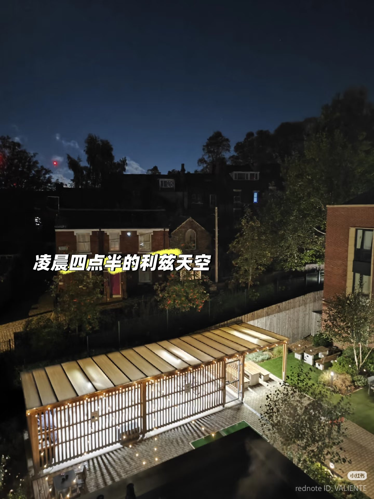
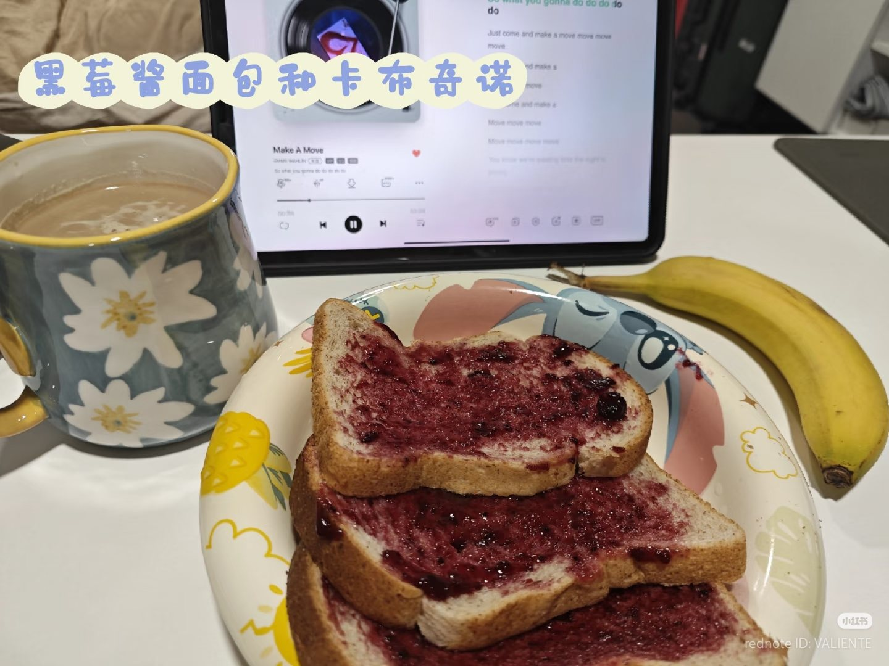
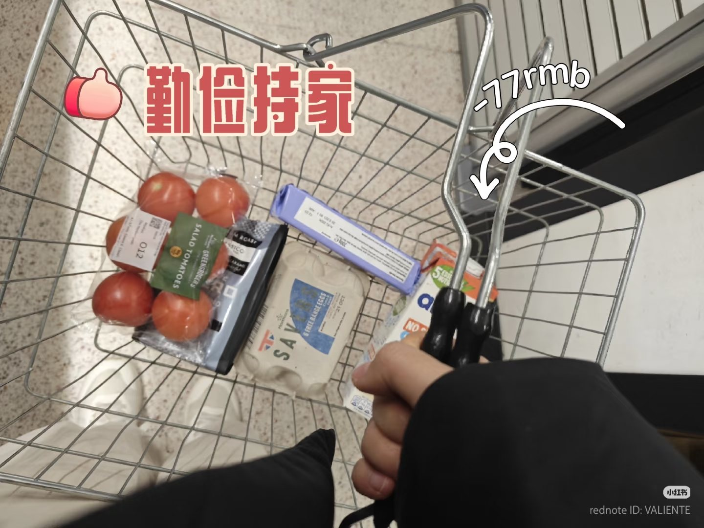
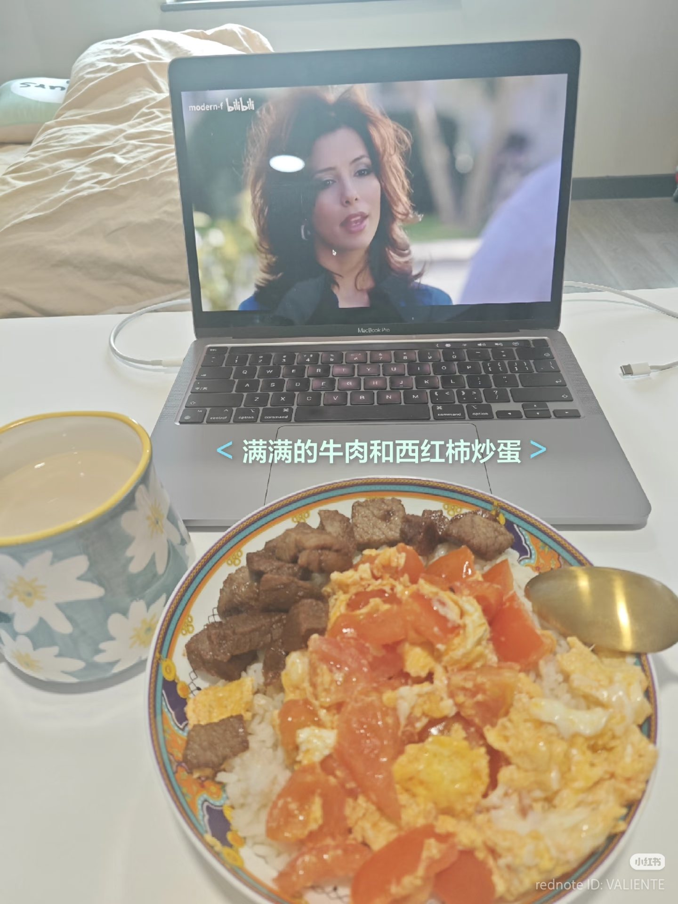
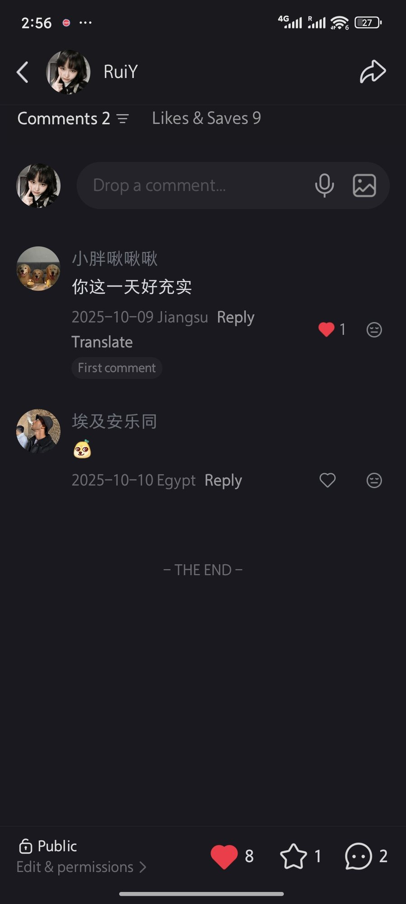

The post was called 英国留学生不上课的一天 — "a day in the life of a UK international student with no classes." Wednesday. No lectures, but a pile of deadlines and online sessions I couldn't skip. I photographed the Leeds sky at 4:30am, blackberry jam toast with a cappuccino, a Tesco trolley with 77 RMB worth of groceries, a bowl of tomato and egg rice with Desperate Housewives playing on Bilibili in the background. I captioned each one. I wrote it like a diary entry, with timestamps and emoji and the particular rhythm Xiaohongshu posts have when they're trying to feel honest and a little casual.
← scroll to see the full post →




The full post — four photos, four timestamps, one Wednesday that looked more productive than it felt.
Two comments came in. One from someone in Jiangsu: 你这一天好充实. Your day was so full. The other was just an emoji, posted from Egypt.
I looked at those two words for a while. 充实 — full, productive, enriching. It's a positive word. A word people use when they're a little envious. The person from Jiangsu read my sleepless, deadline-panicked Wednesday and saw a life worth admiring.
What I posted, and what they read
What I posted was: exhausted. Behind on work. Awake before sunrise because I'd fallen asleep at 7pm from tiredness the night before. Eating breakfast alone. Watching an American drama on a Chinese streaming app because it was the only comfort I had. Converting the grocery bill into RMB because that's still how I think about money, even after months in Leeds.
What they read was: a UK international student living her life freely. No classes on a Wednesday. Going to the supermarket, cooking her own food, filling her day. 充实.
The images didn't lie. The captions didn't lie. But something in the translation — from lived experience to Xiaohongshu post to Chinese reader 8,000 kilometres away — shifted the meaning entirely.
The platform shapes what the post can mean
Part of it is the platform itself. Xiaohongshu's format asks you to document rather than confess. The grid of photos with overlaid text, the timestamp structure, the cheerful emoji — they carry a genre expectation. Whatever you put inside that format, the format signals: this is a life worth showing. I chose to post on Xiaohongshu rather than send a voice note to a friend. That choice was already a semiotic one, already shaping what the content could mean before a single word was written.
Part of it is the imagined audience. I wasn't writing for the person in Jiangsu specifically. But Xiaohongshu's audience — the people who would find a post tagged with 英国留学生 — carries a set of expectations I knew existed and didn't fully resist. There's a whole genre of overseas student content on the platform. It tends to look a certain way: aesthetically photographed foreign cities, desks covered in notes, supermarket receipts converted to RMB, food that signals independence. I was inside that genre whether I wanted to be or not.
And part of it is the distance itself. The person in Jiangsu couldn't feel the 4:30am tiredness. Couldn't know that 发呆 — just sitting, zoning out — took up nearly two hours of that "full" day. The images showed a surface. The surface looked like a life. It was a life, just not the one they were imagining.
A kind translation
Madianou (2015) writes about how choosing a platform is never just a practical decision — it's a decision about what kind of relationship you want to have with your audience, what kind of distance or closeness the medium allows. I chose Xiaohongshu for this post, and that choice meant I would be read by people who had a particular idea of what overseas student life looked like, on a platform built around aesthetic documentation, at a remove that made 4:30am feel like ambition rather than exhaustion.
This is also what our group podcast kept returning to when we looked at Justin Bieber's digital identity across platforms — the same person, the same day, producing completely different meanings depending on where it lands and who is reading it. The scale is different. The grammar problem is the same.
你这一天好充实.
I liked the comment. I didn't correct it. Some readings are kinder than the truth, and across 8,000 kilometres, kindness is its own kind of translation.

2 comments. 8 likes. Jiangsu and Egypt.